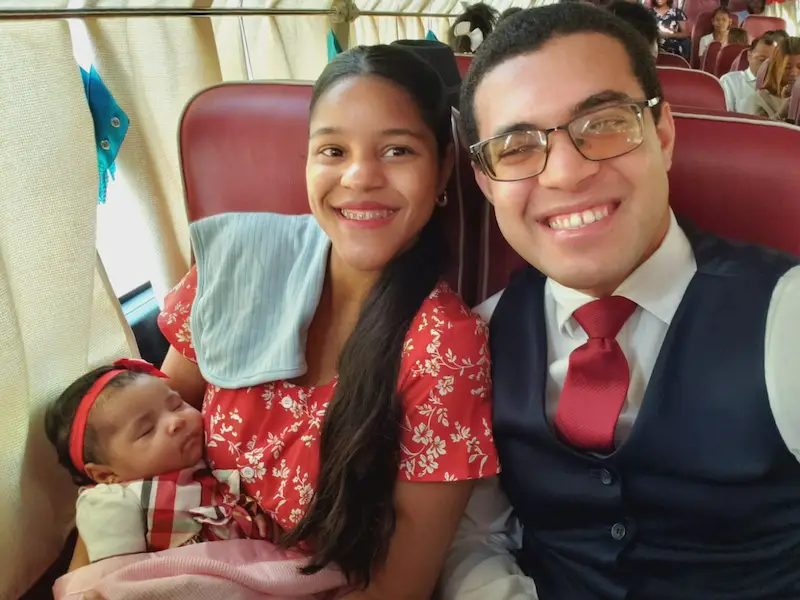

Henry Amaury Lopez Perez | WDD 130
Welcome to my website! My name is Henry Amaury Lopez Perez, and I am a student at Brigham Young University - Idaho. I am currently enrolled in the WDD 130 course, where I am learning about web development. Besides I am a disciple of Jesus Christ and a member of the church of Jesus Christ of Latter-Day Saints, and have a beautiful family with a beloved daugther. I like to study and to set goals; I think that it is always good to have a purpose in life because without one specidic purpose it's difficult to find motivation to act, and the bigger the purpose is the greeater is the motivation. My favorite sport is boxing and I feel a passion for martial arts. Right now I live in the Dominican Republic, where I was born and raised and I have one brother, one siister and one adopted sister eleven years older than me. Normally I have a positive mindset in order to enjoy my life without many worries.